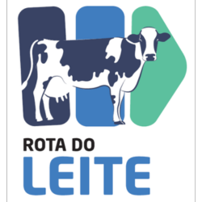
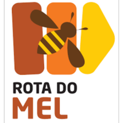
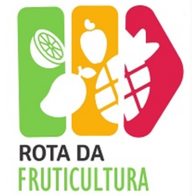
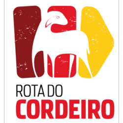
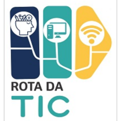
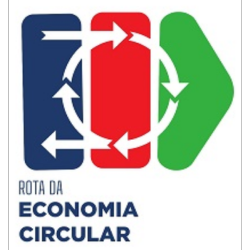

Contempla produtores rurais que tem o leite como atividade de subsistência e com profissionalização da produção.

Visa o desenvolvimento através de arranjos produtivos locais associados à apicultura, meliponicultura e produtos das abelhas.

Ramo da agricultura que vista produzir frutos em geral com o intuito de comercializar os mesmos.

Promove o desenvolvimento territorial e regional por meio do fortalecimento à ovinocultura e à caprinocultura.

Apoia a estruturação de uma rede de polos de TICs para o desenvolvimento e estruturação de smartcities.

Criar alternativas sustentáveis promovendo a inclusão e o desenvolvimento regional a partir do seu aproveitamento econômico de resíduos.